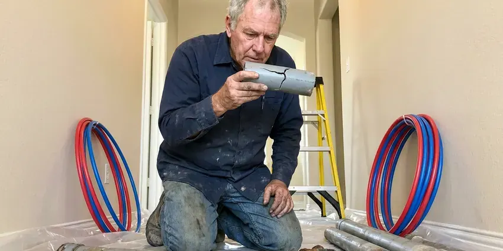

Repipe Specialists in Toledo, OH
Whole-home repiping in Toledo, OH with Type L copper or PEX-A, run overhead and tested before the walls close.
- Drywall Patching Included
- Pressure Tested to Code
- PEX-A and Copper Options
- Fast Free Estimates

New Pipes for Your Toledo, OH Home
Call today for a firm written price.
Licensed Repipe Specialists in Toledo, OH
A repipe sounds like a demolition job, but it is mostly careful cutting and patching. Our crew cuts small access holes at fixtures and along the path, runs the new pipe through the attic and walls and patches each hole afterward. Floors stay covered. Your water is back on most evenings, so you can stay in the house the whole time.
Some of what we do:
- Whole-home PEX-A and copper repipes
- Type L copper repipes for homeowners who prefer metal pipe
- Drywall patching, texture matching and daily cleanup

Additional Plumbing Maintenance Services in Toledo, OH
Our maintenance and specialty plumbing services in Toledo, OH protect your home year-round and extend the life of every system.


Customers
Why Choose HRL Plumbing for Repipe Specialists in Toledo, OH?
Most families stay home during a repipe. Water goes off in the morning and comes back on before the crew leaves. We cover floors and furniture. We clean up at the end of every day, so the house stays livable for the few days the job takes.
- Material Choices, We install PEX-A and Type L copper and help you pick the right one for your house and budget.
- Local Knowledge, We know Ohio plumbing code and the materials that show up in area houses.
- Long-Term Warranty, Repipes carry our written workmanship warranty plus manufacturer coverage.
Citywide Coverage
Every neighborhood of Toledo is on our map, from 1970s ranch houses to two-story homes built in the 2000s. Attached homes are included. One-story, two-story and attached homes each need their own route, and our crews have repiped many of each.
Experienced Team
The HRL Plumbing repipe team brings years of experience with PEX-A and copper. Each plumber is licensed. They know how to make a clean expansion joint, sweat a copper fitting without overheating it and support each pipe so it stays quiet and secure in the wall for decades.
Safety-First Approach
Safety on a repipe means protecting your house as much as the crew. Floors and furniture get covered. Our crews lay floor protection on walkways, cover furniture near openings and use dust control when cutting drywall, so the rest of the house stays clean while we work in one room at a time.
Trusted Certified Toledo Plumbing Services Professionals
At HRL Plumbing, we take pride in licensed, certified plumbing services throughout Toledo, OH. Credentials matter in this trade. Every repair, install and maintenance visit follows strict safety and quality rules, and the plumbers doing the work carry recognized industry credentials.
Call Us Now PHCC Plumbing Contractor Recognition
PHCC Plumbing Contractor Recognition Better Business Bureau (BBB) Accreditation
Better Business Bureau (BBB) Accreditation Angi Certified Pro
Angi Certified Pro ISO 9001 Quality Management Certification
ISO 9001 Quality Management CertificationWhat Our Repipe Crews Do in Toledo, OH
Type L Copper Repiping in Toledo
Copper has been plumbing homes for generations, and done right it lasts a long time. We use Type L, not the thinner Type M, and we support it with the right hangers so it does not rub or rattle in the walls. All joints use lead-free solder. Because some water chemistries eat copper, we look at your leak history before recommending it over PEX.

Slab Leak Repiping in Toledo
A slab leak shows up as a warm spot on the floor, a running meter or a wet patch of carpet with no visible cause. Tree roots and shifting clay often crack older clay or cast iron sewer laterals, leading to slow drains and backups. Rather than jackhammer to reach one leak, we run new lines through the attic and walls and leave the old under-slab pipe out of service. No jackhammer needed. It ends this leak and takes the rest of the slab plumbing out of the picture.
PEX Repiping in Toledo, OH
PEX is flexible plastic tubing that can run long distances without a fitting, which means fewer joints hidden in your walls. Fewer joints, fewer leaks. PEX shrugs off scale and chlorine, survives freezing better than copper and installs faster, so it is our most common repipe material. Our PEX-A installs use expansion fittings that do not shrink the flow path. Flow stays strong at the last shower.
Galvanized Pipe Removal in Toledo
Old galvanized lines shed rust flakes that clog aerators, faucet cartridges and toilet fill valves. Clogged aerators are a clue. New PEX or copper stops the rust, restores pressure and ends leaks at the threads, which is where galvanized fails first. Old pipe stays in walls when pulling it would wreck finished surfaces.
PEX Pipe Replacement in Toledo, OH
PEX tubing resists freezing damage, corrosion and scale better than most metal pipe. It is quieter too. Because PEX flexes, it absorbs some of the shock that causes water hammer, and long runs with few fittings mean fewer places for a leak to start inside a wall. Attic PEX gets kept away from flues and out of UV.
Urgent Repipes After Repeated Failures in Toledo, OH
A widespread pipe failure sometimes forces a repipe sooner than you planned. The first step is temporary repairs so you have water, and then we book the repipe as quickly as the permit and schedule allow. We move fast. Most emergency repipes still finish within the normal two to four day window once work starts.
Drain Line Repiping in Toledo
Drain pipe wears out too, especially old cast iron that cracks and scales up inside. Repeat clogs, sewer smells and several slow drains at once often mean the drain pipe itself is failing. A camera shows the condition. New PVC or ABS, sloped and vented properly, replaces the bad sections and drains better than the old pipe.

Slab Leak Reroutes in Toledo
When one line under the slab leaks, a full repipe is not always the first step. Rerouting one branch overhead and leaving the bad pipe in the slab is often cheaper than both a repipe and a jackhammer repair. It suits a first-time leak. After multiple leaks, we will show you why a full repipe may cost less over the next ten years.
Repipe Specialists Near You in Toledo, OH
Looking for repipe specialists nearby in Toledo, OH makes sense, because local crews know the inspectors and the permit process. That keeps the job moving. We pull local repipe permits often, know the inspection timing and book the rough-in check so patching stays on schedule.
Our crews live and work around Toledo, OH, and repipes are a big part of what they do every week. They know the houses. They already know where local builders ran the mains, which attics are tight and which neighborhoods have polybutylene, and that shapes the plan before anything is cut.
HRL Plumbing at a Glance
- Licensed and insured plumbers serving Toledo, OH
- 24/7 emergency service with same-day scheduling
- Upfront, flat-rate pricing before work begins
- 4.9-star rated by 673+ Ohio customers
Toledo Map
Toledo Information
- Population
- 265,304
- Area codes
- 419/567/330
- Service area
- Toledo and communities within 40 miles
- Nearby
- Lorain, Elyria, Mansfield, Lakewood
Galvanized, polybutylene and thin-wall copper all wear out sooner or later, and a whole-home repipe in Toledo, OH replaces all of it at once.
Expert Services
Reach out to HRL Plumbing for reliable plumbing work done by licensed pros in Toledo, OH.
Our Specialized Plumbing Services in Toledo, OH
At HRL Plumbing, you get every kind of plumbing service from one company across Toledo, OH. From leak detection to full system installs, our team works fast and charges fair prices on homes and commercial properties alike. Explore our core services below:


Our Repipe Process in Toledo, OH
Our repipe process is planned in detail so you know what happens each day.
Get a Written Quote
Call (740) 449-7505 for a free repipe inspection. We review your pipe, attic and fixtures and give you a written price.
Repipe and Inspect
Our crew installs new lines, connects every fixture and tests at full pressure. Water is restored most evenings and the inspector checks the work.
Patch and Walkthrough
We patch and texture every opening and leave the house clean. Then we walk through the home with you and explain your warranty.
Frequently Asked Questions About Repipe Specialists in Toledo
Most whole-home repipes in Toledo, OH fall somewhere between $4,000 and $15,000. Bigger homes cost more. The final number depends on square footage, how many fixtures need new lines, whether you choose PEX or copper and how much drywall has to be opened and patched along the route. We quote it in writing.
Whole-home repipes require a permit and inspection in most Ohio jurisdictions. Our office handles the permit and inspections.
Yes, a whole-home repipe in Toledo, OH usually needs a plumbing permit. We handle it. We file it, book the inspection while walls are open and close it out at the end, which puts the work on record.
We commonly use Uponor PEX-A with ProPEX fittings and Type L copper from domestic mills. Copper jobs often get Viega ProPress fittings.
We have to open some drywall, but the openings are small and planned. Most are about the size of a sheet of paper. Each cut is a clean square at a fixture or along the route, and we patch and texture all of them so the walls are ready for paint.
Having the repipe documented with a permit can make your home easier to sell and insure, especially when replacing polybutylene or Kitec. Buyers and inspectors notice it.
Both work well, and the best choice depends on your house and your water. PEX costs less. PEX bends, resists scale and handles freezes better, and copper is rigid, UV-tolerant and proven but pricier and vulnerable to aggressive water.
We provide a written workmanship warranty, and PEX makers such as Uponor offer long-term warranties when certified installers use their system. You get the details before we start.
What Our Customers Say About Our Plumbing Experts

Monica A.
Our water bill nearly doubled in one month with no change in how we used water. The tech checked the meter, heard the leak under the hallway with his equipment, and opened a hole about a foot square. Fixed the same day.
Slab Leak Repair · Parma, OH
Greg S.
I manage a small strip center with six tenants. HRL Plumbing handles our annual backflow testing and fixed a recurring clog in the shared sewer line that had been backing into the nail salon. Their reports come in clean and on time.
Commercial Plumbing · Cleveland, OHBrian W.
I smelled gas behind the dryer and called right away. The plumber found a corroded flex connector, replaced it, and pressure tested the whole line before turning the gas back on. He let me watch the gauge hold steady for fifteen minutes.
Gas Line Repair · Cleveland, OH
Tyler J.
We bought a taller comfort height toilet for my dad, who just had knee surgery. The plumber pulled the old one, found the flange was cracked, and replaced it before setting the new bowl. Took about two hours.
Toilet Installation · Parma, OHJessica T.
We were adding a gas range in a kitchen remodel and needed a new line run from the meter. The plumber pulled the permit, ran the pipe through the crawl space, and had it inspected and approved within the week.
Gas Line Repair · Lorain, OHSofia M.
Two new toilets went in during one visit. The tech set them on new wax rings and swapped the old supply lines. He also noticed our bathroom faucet dripping and replaced the cartridge while he was there. No mess left behind.
Toilet Installation · Elyria, OH